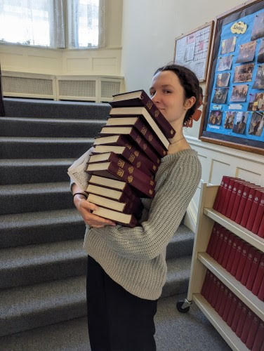
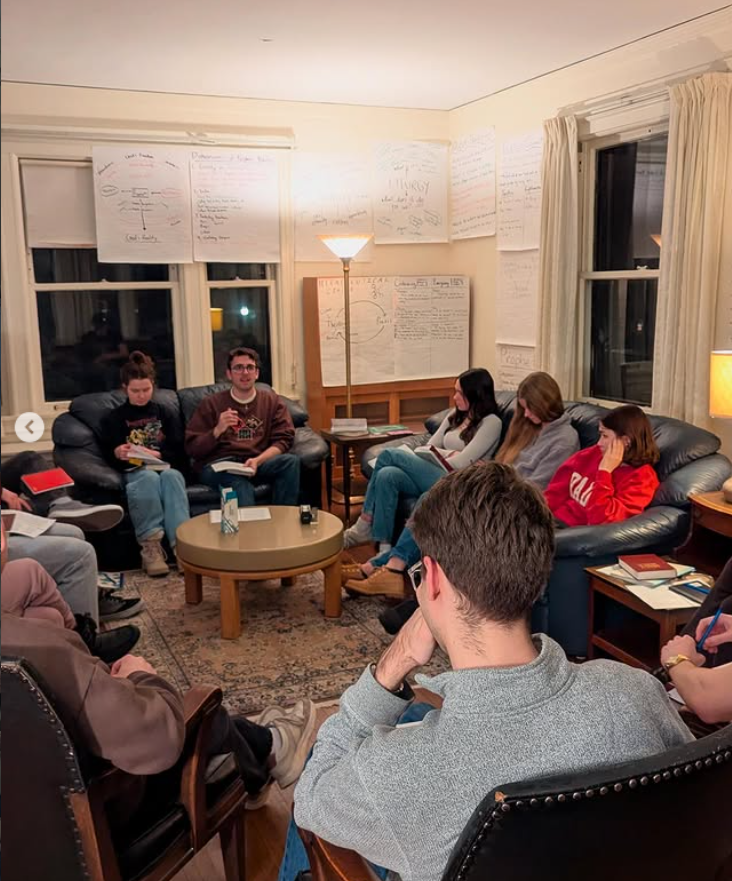
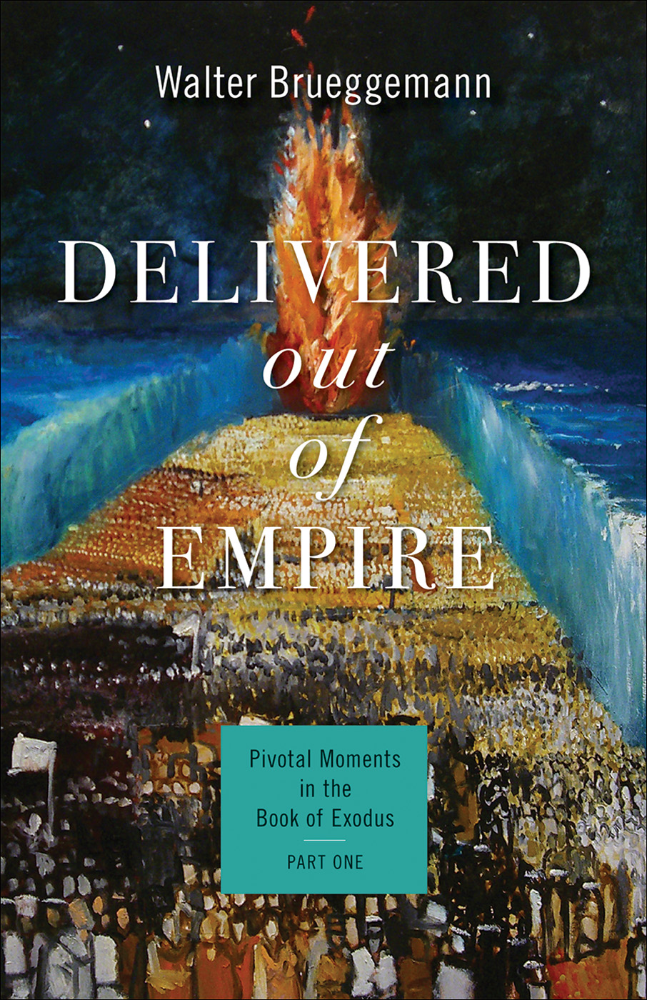
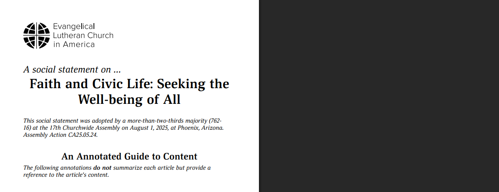
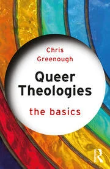
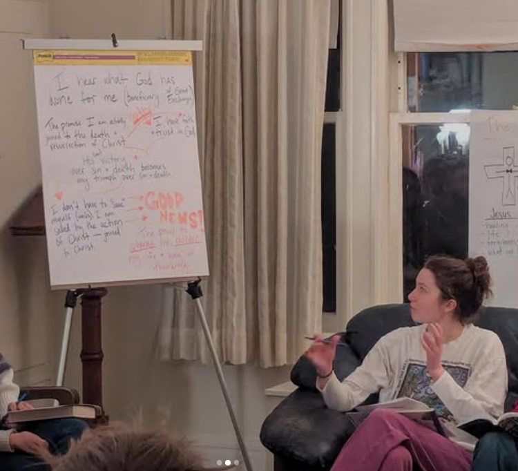
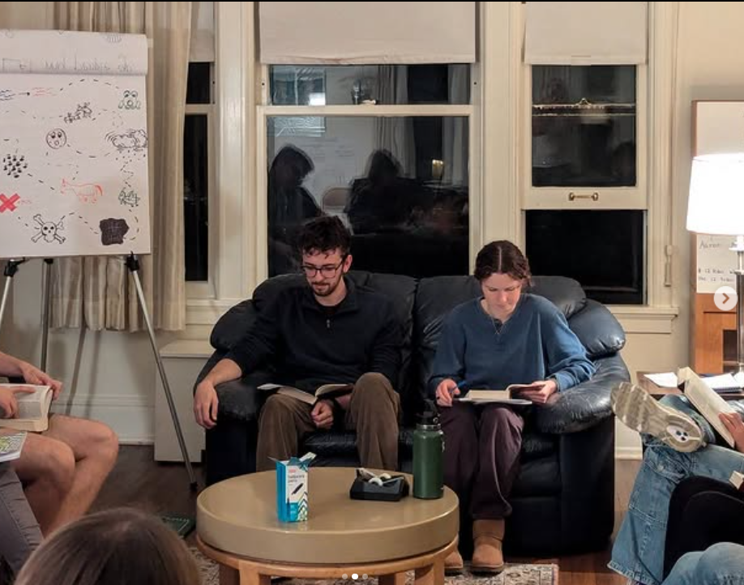

What I Saw
A job opportunity to learn more about my faith by teaching my peers as a freshman.

What I Thought
I enjoy learning about theology. I enjoy meaningful reflection. I enjoy asking questions. I could do a good job leading this.

What I Do
- I read theological commentary, historical context, and biblical texts and condense the material into a weekly hour-long guided discussion.
- I translate the content from these documents into analogies, lectures, and open-ended questions that are digestible, timely for current events, and applicable to my peers’ lives.
- I collaborate with another student, aligning schedules, weekly goals, and different interpretations of text to ideate and iterate on our outlines.
- I implement feedback from my supervisor to ensure the organization’s beliefs are accurately reflected and prioritized within the specific language of our programming.
- I learn about something new!



What I Create
Our weekly 21Theo class time is an environment that fosters open conversation with room for vulnerability, confusion, and conflicting beliefs. Every week I formulate discussion materials and questions that are relevant to the text and my peers’ lives. By creating a space to learn with applicable language and examples to do so, I develop the theology of my peers to strengthen my community. This becomes a space where we, myself included, share and learn from each other’s experiences and insights to work toward something bigger than ourselves.

Why Include This?
My on-campus job is evidence that I want to be part of creating meaningful experiences for people. I enjoy listening in these sessions just as I enjoy listening in user research; I practice follow-up questions, pivoting, and recognizing misunderstandings in real-time. No matter what I am pursuing, I seek to foster a sense of community where every person’s unique perspective can be seen and heard. The R&D approach I bring to the creation of these discussion guides shows that I am never satisfied with what is working; I continue to find new strategies to engage individuals and keep our discussions fresh, so that they are excited to stretch their theological boundaries and participate each week.
